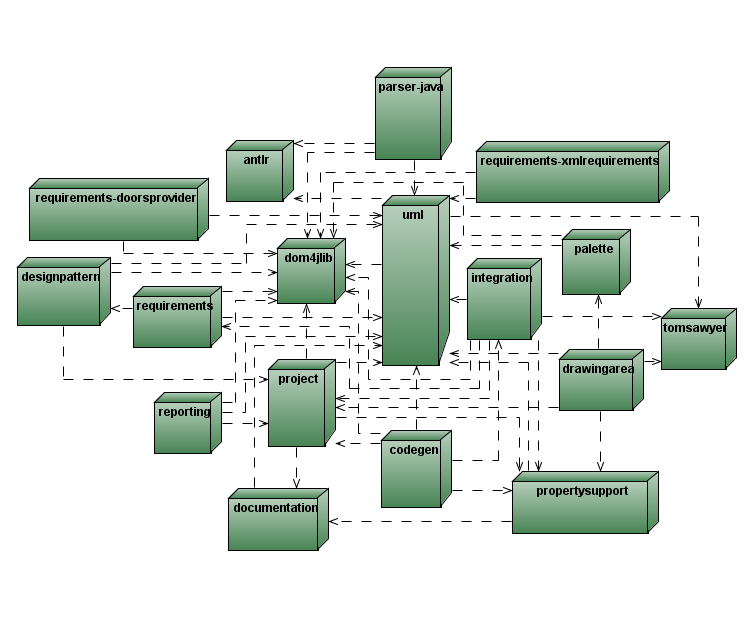

Version 2.1
Please maintain the history of your responses:
Author
Date
Comments
Your name
mm/dd/yyyy
comments
George Vasick
08/06/2007
1st draft
Project name:
NetBeans 6.0 UML
ARC case number:
Project's PAC full title and email address:
Java Tools PAC
javatools-pac@Sun.COM
Name(s) of the person(s) providing answers to the questions:
George Vasick
Are your answers to these questions for an Inception or Commitment review?
Inception.
Major milestones dates:
Alpha: M9 JavaONE Preview 05/2007
Customer Acceptance/Beta: Beta1 09/2007
Revenue Release/GA: 11/2007
Proposed release binding (See: Release Taxonomy) (Major, Minor, Micro, Patch):
Major
Product version number:
6.0
For projects modifying existing
products:
Enumerate incompatibilities this project introduces that existing
customers/user will see:
UML projects from JSE 8.1 and NB 5.5/5.5.1 can be
opened
and continued with NB 6.0. Once the user has done so, the
project
can no longer be opened with the previous version of the IDE.
What is the size of the existing customer base?
Approximately 80K downloads since 5.5 FCS,
April 2007
through June 2007.
If a previous version of this project has been through an ARC commitment review before what is the ARC case number(s) for the last case(s)?
List all hardware platforms and Operating Systems this project supports:
Windows
Linux
Solaris
X86
Sparc
Please provide a short summary of what this project is. This may be copied from the project's one-pager. The case owner needs a 1 to 4 paragraph description for the beginning of the Opinion document.
The UML Modeling project provides UML modeling
features to the NetBeans
IDE. UML modeling allows analysts and designers to design applications
using a standard modeling language. Developers are then able to
generate source code from the UML model and update the model from
changes made in their source code.
The UML Modeling module provides the following main features:
Who are the target users for this project (Administrators, Developers, End-users, etc)?
Developers and Architects.
If this is a modification to an existing product, enumerate the changes/additions to the public interfaces. In other words, what is the difference from one version to the next? If this is a new product enumerate the significant features.
Customizable Code Generation
Domain Modeling Code Generation
Source Code Synchronization
New Oprions Panel
Please provide diagrams that illustrate the project's architecture and interfaces. Be specific about deliverable components and their interfaces. Pay particular attention to describing the scope of the project, especially near the project boundaries.

What is the motivation for this project? What are the expected benefits for Sun?
Developer adoption. Worldwide, significat percentages
of
developers
use UML:
APAC: 50.60%
EMEA: 40.40%
NA: 42.30%
Note, UML is also required by many enterprise class customers.
Are there related projects at Sun? What are their relationships to this project?
UML is included in the NetBeans 6.0 Full installer..
Enumerate the (known) projects at Sun which depend on this project.
None.
Enumerate the projects this project depends on.
NetBeans 6.0 Basic. UML runs within the NetBeans IDE.
Enumerate the products this project bundles (i.e. includes in its distribution).
None.
Enumerate any non-Sun projects this project depend on.
Antrl
Dom4j
Tom Sawyer Graph Library
Does this project incorporate any software that is governed by the GNU General Public License (See http://www.gnu.org/copyleft/gpl.html.
No.
What future projects should be started or avoided to help your project succeed, why?
None.
Will the project be bundled in (integrated into) Solaris?
No.
Solaris 9 update release: N/A.
Solaris 10 release: N/A.
Solaris 11 release: N/A.
Does the project ship as part of project Java ES or what is your roadmap with respect to shipping with project Java ES?
UML is included in JSE 8.1, the campion tools product
for
JES 5. A future version of NetBeans will be paired with JES 6.
For each platform the project delivers on, what installation mechanism will be used to install the project (SVR4 Packages, SetupSDK, RPM's, etc)?
NBM's
List any SVR4 package names and a short description of each new or modified package you will be delivering. Additionally include in your case materials prior to commitment the spec for the contents of the packages. The package prototype files are acceptable.
N/A
List any RPM package names and a short description of each new or modified RPM you will be delivering. Additionally include in your case materials prior to commitment the spec for the contents of the RPM's.
N/A
Default installation directory:
Solaris: Same as NetBeans 6.0.
Linux: Same as
NetBeans 6.0.
Windows: Same as
NetBeans 6.0.
Other: N/A
Is the user allowed to override these locations?
Yes.
Can multiple versions and/or multiple copies of the project be available on the same system at the same time?
Yes.
When the project is uninstalled does it leave anything on the filesystem? How does the user clean up files that remain?
Same as NetBeans 6.0.
Can the project's installer upgrade-in-place a prior installation (down-rev) of the project? On all platforms supported?
Upgrades can be performed via the plugin manager.
During the installation process does the installer execute any programs or [class-action] scripts the project provides?
No.
Does the project require a JDK or a JRE (state which)? What JVM versions does the project require and/or support?
JDK. Java SE 5 and 6 are supported.
Does the project expect the JVM to already be installed on the system or does the project install the JVM?
Yes.
If the project installs the JVM where is it installed (See LSARC/2002/172)?
N/A.
Does the project run in a J2EE environment?
No.
If so which version of the J2EE standard do you support.
N/A
Do you intend replace/augment any of the J2EE platform jars with a different version?
No.
Which J2EE application servers do you qualify against
N/A.
N/A.
N/A.
N/A.
What environment variables are used (both consumed and produced)?
None.
What entries are stored or retrieved from the Windows Registry?
None.
What exit statuses are exported?
None.
What signals (man signal(5)) are issued or caught?
None.
What network port numbers are utilized? If you are exporting any ports have they been registered with www.iana.org?
None.
If you utilize a port in the private range (above 49152) how do you test for availability?
None.
Does the project utilize cron or the Windows Task Scheduler? Describe how it is used and how often tasks run:
No.
Does the project use any hidden (dot) files?
Yes, the netbeans userdir, .netbeans.
Any temp files?
No.
Any files in the user's home directory?
Yes. The .netbeans userdir is created in the user's home directory by default.
Does the project utilize a proscriptive licensing mechanism?
No.
Command line interfaces. Provide specifications for any command line interfaces the project introduces or modifies (preferably in man page format). The specs should include the command name, description of what it does, command options, exit status and output format. Command options should be getopt (man intro(1)) and/or CLIP compliant.
N/A.
For each command list any libraries it uses. (Hint: Use ldd and dump -Lv). Identify and justify the requirement for any static libraries.
N/A.
Does this project deliver any shared libraries? Enumerate the names of any public shared libraries.
Are they versioned and scoped?
N/A.
Does this project delivery any static libraries?
No.
Is the project 64-bit clean?
Yes.
Is there any architectural reason why the project would not work in a 64-bit environment? See http://docs.sun.com/db/doc/806-6543 for more info.
No.
Is the project compatible with IPV6 interfaces and addresses?
N/A.
Has the project been internationalized? (See http://i18n.red.iplanet.com/faq.html for an internationalization FAQ)
Yes.
Which locales does the project support? Indicate which locale is the default.
English, Japanese, Simplified Chinese.
Does the project use resource files or solaris locale databases?
resource files.
Does the project set any of the environment variables: LANG, LC_ALL, LC_CTYPE, LC_COLLATE, LC_CTIME, LC_NUMERIC, LC_MONETARY, LC_MESSAGES?
No
Are there other projects that depend upon this project, that require locales that will not be provided by this project?
No.
How does the project behave when run in the C locale (the default Solaris locale)?
It defaults to English.
Does the project follow the solaris convention for L10N package names, see http://sekai.sfbay/projects3/l10n_steering_committee/l10n_steering_committee/web/docs/pkg_convention.txt?
N/A.
Does this project supply a graphical user interface? If so please provide a user interface specification with your case materials.
Documented in the online help provided within the NetBeans IDE.
Does this project add any items to any existing system menus (e.g. Windows Start menu)? Describe what is added.
No.
Does this project add any icons to the user's desktop?
No.
Does this project introduce any new MIME types?
No.
This is an umbrella project description for Open ESB. Detailed interface changes or new interface descriptions will appear in corresponding one pagers and functional specifications.
Interfaces Imported
| Interface Name | Stability Classification | Specified in What Document? |
|---|---|---|
| Java API at least 1.5 | Stable | java.sun.com (PSARC/2000/436) |
| Tom Sawyer Graphic Library |
Third
Party |
tomsawyer.com |
| Antlr 2.7.2 |
Third Party | antlr 2.7 2 |
| dom4j 1.2 |
Third Party | dom4j.org |
Interfaces Exported
|
Interface |
Classification |
Comments |
| None |
|
|
How is the project and its significant interfaces versioned?
The spec number is incremented in the corresponding NBM.
Can this version co-exist with existing standards and with earlier or later versions or with alternative implementations (perhaps by other vendors)?
N/A
Are there incompatibilities with prior versions of the interface?
if yes, how is the transition to the new version to be accomplished?
N/A
If applicable, explain your project's interoperability with other major implementations in the industry:
There is currently no interoperability. Support of XMI import/export is on our roadmap for a future release.
What would be different about installing your project in a heterogeneous site instead of a homogeneous one (e.g. All running Solaris)?
No issues. The project is completely implemented in Java.
Please identify any issues that you would like the ARC to address:
None.